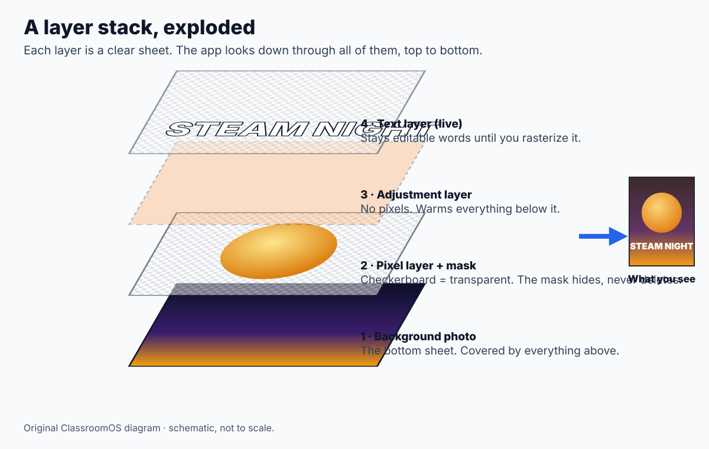
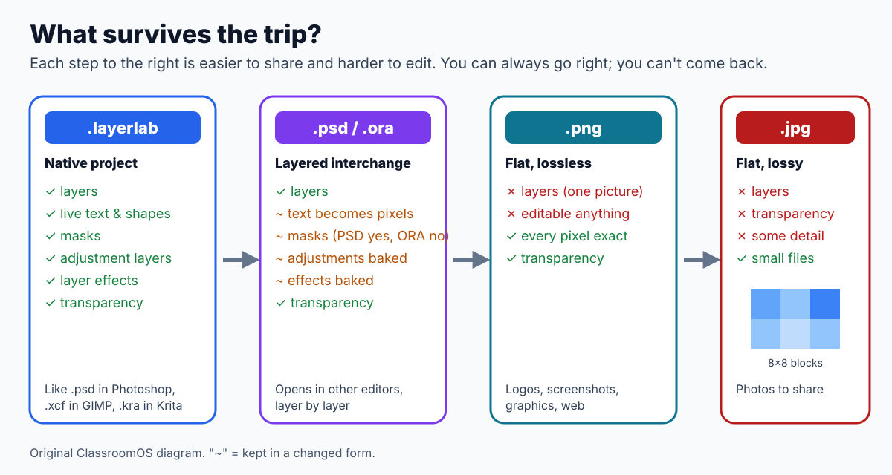

A full editor in the pageLayers & masksBlend modesSmart selections & retouchingPSD · OpenRaster · PNG · JPEG10 self-checking missions
Photoshop, GIMP, Krita, Photopea and Affinity Photo look different, but under the menus they all do the same few things: stack layers of pixels, hide parts with masks, mix colors with math, and save files that other apps can open. This lesson's workshop, Layer Lab, works the same way. Learn the ideas here and you can sit down at any of them.
Nothing leaves your computer. Pictures you open and files you save in the Workshop Drive stay in this browser. Press Download when you want a real file to hand in or to open in another app.
The workshop · open it, poke everything, you can't break it
Layer Lab
The starter poster below is already open. Every part of it is a separate layer: click the eye icons in the Layers panel to switch them off one at a time and see what each one adds. Full screen (top right, or press F) gives you the whole window, just like a desktop app.
① Menu barEvery command lives here: File, Edit, Image, Layer, Select, Filter, View. Shortcuts are listed beside each one.
② ToolboxThe tools you drag on the canvas. A small triangle means more tools are hiding underneath: click again to switch.
③ Options barSettings for the current tool (brush size, tolerance…) plus a one-line tip on how to use it.
④ Canvas & tabsYour documents. Scroll to pan, Ctrl + scroll to zoom. The checkerboard means "transparent here".
⑤ PanelsProperties of the selected layer, History (every step you took), Files (the Workshop Drive), Missions and Info.
⑥ Layers panelThe stack. Top of the list is the top of the picture. Blend mode and opacity sit above it; new layer, mask, effects and delete below.
Pixels · 6 minutes
What is a photo editor actually editing?
A photo is a raster image: a grid of tiny squares called pixels. Each pixel is four numbers from 0 to 255: how much red, green and blue light, plus an alpha number for how see-through it is. A 1080 × 1350 poster is 1,458,000 pixels, so 5.8 million numbers per layer. A vector graphic instead stores instructions ("a circle, this center, this radius"), so the computer can redraw it sharp at any size.
Raster: 32 × 32 pixels. Zoom in and the squares appear.Vector: math. Zoom as far as you like.
Why this matters in the workshop. Making a picture bigger is called resampling: the editor has to invent pixels that were never photographed, so enlarged photos look soft. Live text and shape layers are stored like vectors and stay crisp until you rasterize them. Try it: zoom the canvas past 800% (View › Zoom In) and the pixel grid appears.
Layers · 8 minutes
Layers are stacked sheets of glass

The stack, exploded. The app looks down through the sheets from the top. Where a sheet is transparent you see the ones below; where it is solid it covers them. Moving a layer up or down the list changes what covers what. Original ClassroomOS diagram.
Without layers, painting a sun over a sky replaces the sky's pixels forever. With layers, the sun sits on its own sheet: you can move it, recolor it or delete it, and the sky underneath is untouched. Layer Lab has the same kinds of layer you will meet in any editor:
▦Pixel layer
A grid of pixels you paint, erase and filter. Photos open as one.
TText layer
Live words. Change the font or spelling any time.
▭Shape layer
A live rectangle or ellipse. Resize without blur.
◑Adjustment layer
No pixels: it recolors everything below it.
◐Mask
Attached to a layer: black hides, white shows.
Try mission Stack it: make a new layer, double-click its name to rename it, then paint on it.
Masks · non-destructive editing · 8 minutes
Hide, don't erase
The Eraser deletes pixels. Once you save and close, they are gone. A layer mask is a grayscale picture attached to a layer: black hides, white shows, gray is partly see-through. Paint black and the layer disappears there; paint white and it comes back, because the pixels were never touched. Professionals call this non-destructive editing, and it is the single most useful habit you can take from this lesson.
Eraser
Layer mask
What happens to the pixels
Deleted
Kept, just hidden
Change your mind tomorrow
✗ Only if you never closed the file
✓ Paint white
Soft fade-out edge
Hard to do evenly
✓ Gradient tool on the mask
Shortcut habit
E
◐ button, then B with black (D resets colors, X swaps)
Open the Moon photo. Choose Layer › Remove Background ✦. Layer Lab builds a mask for you.
Look at the Layers panel: a second, black-and-white thumbnail appeared. That is the mask, outlined because it is the paint target.
Press B, press X until white is the foreground, and paint over the black sky. The sky comes back. Nothing was deleted.
Blend modes · it's just math · 8 minutes
How do two layers mix?
Normally a solid pixel on top hides the pixel below it. A blend mode replaces "hide" with a formula. Each color channel is treated as a number from 0 (none) to 1 (full). Multiply multiplies them, so the result can only get darker, like stacking two colored filters. Screen multiplies the inverses and flips back, so it can only get lighter, like two projectors shining on one wall. Choose two colors and a mode:
bottom
top
result
Proof it's the real thing. The calculator uses the same formulas as the W3C Compositing and Blending standard, which is what browsers, and Layer Lab's canvas, actually run. Photoshop's modes with the same names match these closely.
Colorize a black-and-white photo: open the first-flight photo, add a New Layer, set its blend mode to Color, and paint the sky blue and the sand tan with a big soft brush. The Color mode keeps the photo's light and dark and borrows only the hue from your paint.
Adjustments & the histogram · 8 minutes
Change the color, keep the pixels
An adjustment layer is a recipe ("+30 warmth", "levels 20 to 230") applied to every layer below it, every time the picture is drawn. Hide it and the original is back. The same adjustments also live in Image › Adjust pixels, which bakes the change into one layer permanently. Use those only when you're sure.
The Info tab shows the picture's histogram: a bar for each brightness from 0 to 255, showing how many pixels have it. A faded old photo has its bars squashed into the middle. Levels moves the black point and white point to the edges of the data and stretches everything between; Image › Auto Tone does that for you, ignoring the darkest and brightest 0.5% so a few specks of dust don't fool it.
Smart tools · how the computer guesses · 10 minutes
"Smart" tools are algorithms you can understand
Tools marked ✦ or smart look at the pixels and make a decision for you. None of them understand the picture the way you do; they follow rules. Knowing the rule tells you when the tool will fail and how to help it.
Magic Wand W
Read the color you clicked.
Visit its neighbors. Any neighbor within Tolerance of that color joins the selection.
Repeat from each new pixel until nothing else qualifies (a flood fill).
Fails when the subject and background are similar colors. Raise or lower Tolerance; Shift-click adds more.
Select › Subject ✦
Assume the edges of the photo are background.
Grow inward from every edge pixel through similar, gently changing colors.
Whatever the background never reached is the subject. Specks smaller than a few dozen pixels (stars, dust) are dropped.
Fails when the subject touches the edge of the frame or matches the background.
Spot Heal J & Content-Aware Fill
Fill the hole from the outside in, each ring averaging the pixels just outside it.
That looks plastic, so borrow texture: copy the fine grain from a same-shaped patch next to the hole.
Blend the soft edge into the original.
Works on sand, sky, grass. Fails on faces and straight edges, where the Clone Stamp (S) is better.
Smart guides & Align
While you drag with the Move tool, Layer Lab compares the layer's edges and center with the canvas and the other layers. Within 6 screen pixels it snaps and draws a pink line. The align buttons in the options bar line layers up with the canvas (or with your selection) in one click.
Check the robot's work. AI tools in commercial apps are far better at guessing than these, but they still guess. Zoom in on every edge a smart tool made before you hand work in.
Files · export and import · 10 minutes
What survives the trip?

Each format is a promise about what it keeps. Work in the native project, share layers as PSD or OpenRaster, publish as PNG or JPEG, and never edit the JPEG and save it again and again. Original ClassroomOS diagram.
✓ kept · ~ kept in a changed form · ✗ lost
Format
Layers
Transparency
Live text
Masks
Compression
Opens in
.layerlab (native)
✓
✓
✓
✓
lossless
Layer Lab
.psd (Photoshop)
✓
✓
~ pixels
✓
lossless
Photoshop, Photopea, GIMP, Krita, Affinity
.ora (OpenRaster)
✓
✓
~ pixels
~ applied
lossless
Krita, GIMP, MyPaint, Pinta
.png
✗
✓
✗
✗
lossless
everything
.webp
✗
✓
✗
✗
lossy or lossless
browsers, most editors
.jpg
✗
✗ (white)
✗
✗
lossy
everything
Round trip experiment
With the starter poster open, choose File › Export As…, pick PSD (layered) and press Save to Workshop Drive. Read the yellow notes first: they list what the PSD can't keep.
Open the Files tab and press Open on the .psd. The import report tells you what came back.
Compare the two tabs. Which layers are still live text? Where did the Warm filter go?
Now export a JPEG at quality 90 and at 20. The export window shows a 200% close-up of the real compressed pixels and the file size. When do the 8 × 8 blocks appear?
How does an app know what a file is? Not from its name. It reads the first few bytes, the file's signature. A PSD starts with the letters 8BPS, a PNG with ‰PNG, a JPEG with the bytes FF D8 FF, and an OpenRaster file is a ZIP (PK) whose first entry says image/openraster. Layer Lab checks the same signatures, so renaming a .jpg to .psd doesn't fool it.
Want to take your work further? Download the PSD and open it in Photopea (free, in the browser), GIMP or Krita (both free to install). Your layers, names, blend modes, opacity and masks come with it.
Every app · same ideas, different menus
Where is it in the app you'll use next?
Pick the apps you care about. Your choice is remembered across lessons. Menus move between versions, so treat this as a map, not gospel.
Client brief · 30–45 minutes
Design the STEAM Night poster
The client: our school's STEAM Night committee. The deliverable: one portrait poster (1080 × 1350 px) as a PNG for the school website, plus your layered project file so the next designer can update the date.
At least four layers, with sensible names.
Live text for the event name, date, time and place, readable from across the room.
At least one mask (not the eraser) and one adjustment layer.
One cut-out from a sample photo (Earth, Moon, Jupiter or the Wright Flyer), with clean edges.
Export a PNG, and save a .layerlab project (Ctrl+S). Download both to hand in.
Your missions
These tick themselves as you work in Layer Lab, and stay ticked in this browser.
Practice Problems
Check what you learned. Every answer can be tested in the workshop above.
Easy1. On a layer mask, which color hides the layer?
Hint: "Black hides, white shows." Try it with the Brush on a mask thumbnail.
Easy2. You need a logo with a see-through background for a website. Which format?
Hint: JPEG can't store transparency, and a website can't show a PSD.
Medium3. With Multiply, a bottom channel of 0.5 and a top channel of 0.5 give what value?
Hint: Multiply is bottom × top. Use the blend calculator to check.
Medium4. A 1000 × 800 pixel layer stores red, green, blue and alpha, one byte each. How many megabytes is that, uncompressed? (1 MB = 1,000,000 bytes)
Hint: pixels × 4 bytes. The Info tab does this sum for the open document.
Medium5. You export your poster as a layered PSD. What happens to the live text layer?
Hint: read the notes in the Export window, or the import report when you reopen it.
Challenge6. Select › Subject selected the sky as well as your friend. What is the most likely reason?
Hint: reread the three steps of Select Subject in the Smart tools section.
Challenge7. Why is a mask better than the eraser for cutting out a photo you will hand in next week?
Hint: think about what you can still change tomorrow.
Exit ticket: name the trade-off
Your writing stays on this device. Use the lesson's Save button to keep it.
Photopea: Learn · tutorials for the free, browser-based PSD editor
Sample photos: the Moon, Earth (Blue Marble) and Jupiter (Cassini) are NASA images in the public domain. The 1903 first-flight photograph is by John T. Daniels, Library of Congress, public domain. The starter poster, beach scene, diagrams and Layer Lab itself were made for this class.